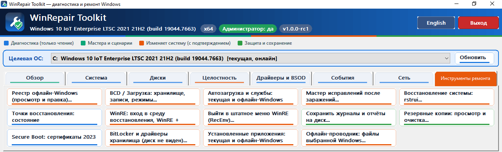

Windows снова работает как надо
Диагностика и ремонт Windows 10 и 11 в одном маленьком файле: системные файлы, загрузка, диски, сеть, драйверы, работа оффлайн с Windows, также в среде «Windows RE + WinRepair».

Что умеет WinRepair Toolkit
Диагностика и ремонт в одном окне — для работающей Windows и для той, что не загружается: выберите систему на другом диске или из среды восстановления.
- Диагностика, только чтение
- Мастера и сценарии
- Ремонт с подтверждением
- Защита и сохранение
-
Обзор системы
Версия и сборка Windows, процессор, память, права — сразу при запуске.
-
Диски и S.M.A.R.T.
Здоровье SSD и HDD, разделы, свободное место и ранние признаки отказа.
-
Драйверы и BSOD
Разбор синих экранов, проблемные устройства и сбойные драйверы.
-
Журналы событий
Критические ошибки и предупреждения Windows, отобранные по важности.
-
Целостность Windows
Проверка и восстановление системных файлов и хранилища компонентов.
-
Загрузка и BCD
Хранилище загрузки, записи и режимы — когда Windows не стартует.
-
Офлайн-реестр
Просмотр и правка реестра Windows, даже если она не загружается.
-
Сеть и интернет
Сброс сетевого стека, DNS и прокси, когда «интернет есть, но не работает».
-
После заражения
Мастер устраняет последствия вирусов: прокси, политики, ассоциации, службы.
-
Среда восстановления
Вход в WinRE и штатное меню восстановления Windows в пару кликов.
-
Точки восстановления
Состояние защиты системы, создание точки и откат через rstrui.
-
Отчёты и резервные копии
Журналы и отчёты на диск, просмотр и очистка резервных копий.
Как проходит ремонт
Сначала только диагностика, потом ремонт по вашему выбору. Время зависит от скорости диска и числа найденных проблем.
-
1
Диагностика
Программа проверяет систему и показывает список найденных проблем. Ничего не меняется без вашего согласия.
-
2
Точка восстановления
Перед ремонтом создайте точку восстановления: программа показывает состояние защиты и создаёт точку в пару кликов.
-
3
Исправление
Выбранные действия выполняются по очереди, в журнале видно каждую команду и её результат.
-
4
Отчёт
В конце — понятный итог: что было исправлено, что требует внимания и нужна ли перезагрузка.
Некоторые инструменты, используемые в процессе ремонта
-
Мастер «Что случилось?»
Диагностика по симптому: опишите проблему — мастер подскажет проверки.
-
Сценарии ремонта (playbooks)
Готовые последовательности шагов для типовых неполадок.
-
Каталог команд
Все действия программы в одном списке с описанием.
-
Мастер исправлений после заражения
Устраняет последствия вирусов: прокси, политики, ассоциации, службы.
Почему этому можно доверять
-
Открытый исходный код
Весь код лежит на GitHub. Любой может посмотреть, что именно делает программа.
-
Только встроенные средства Windows
Ремонт выполняется штатными средствами Microsoft, без сторонних «чудо-драйверов».
-
Изменения только с подтверждением
Диагностика ничего не меняет. Всё, что затрагивает систему, выполняется только после вашего согласия.
-
Всё можно отменить
Точки восстановления и резервные копии позволяют откатить любое изменение.
Скачать WinRepair Toolkit
Один файл, без установки. Запустите от имени администратора.
Не знаете, какую выбрать? Почти все современные компьютеры — 64-бит.
- Версия
- 1.0.0
- Размер
- 1,8 МБ
- Система
- Windows 10, 11
- Дата
- —
- Язык
- RU / EN
появится после публикации релиза
Частые вопросы
Программа правда бесплатная?
Да. WinRepair Toolkit распространяется бесплатно, с открытым исходным кодом. Никаких платных версий, пробных периодов и рекламы.
Есть ли английская версия программы?
Да. Язык интерфейса переключается кнопкой English в окне программы — программа быстро перезапускается на выбранном языке.
Windows SmartScreen предупреждает при запуске. Это нормально?
Да, так бывает с новыми программами без дорогой цифровой подписи. Сверьте контрольную сумму SHA-256 с указанной на этой странице, затем нажмите «Подробнее» → «Выполнить в любом случае».
Можно ли что-то сломать?
Программа использует только штатные средства Windows и перед ремонтом создаёт точку восстановления. Если результат не понравится, откатитесь через «Восстановление системы».
Зачем нужны права администратора?
Команды вроде SFC, DISM и сброса сети работают только с правами администратора — так устроена сама Windows.
Поможет ли программа против вирусов?
Нет, это не антивирус. Но она исправляет последствия: сбитые настройки прокси, отключённые службы, повреждённые системные файлы. Сначала проверьте компьютер антивирусом.
Как сообщить об ошибке или предложить функцию?
Создайте issue на GitHub или напишите в форму внизу страницы. Приложите отчёт о системе — так проблему найти гораздо быстрее.
Отзывы и обсуждение
Поделитесь, что помогло, задайте вопрос или расскажите о проблеме. Для комментария нужен аккаунт GitHub.
Связаться с автором
Вопросы, предложения, сотрудничество — пишите любым удобным способом.
Комментарии ещё не подключены.
Владельцу сайта: включите Discussions в репозитории, получите параметры на giscus.app и впишите их в файл js/config.js. Подробности — в README.